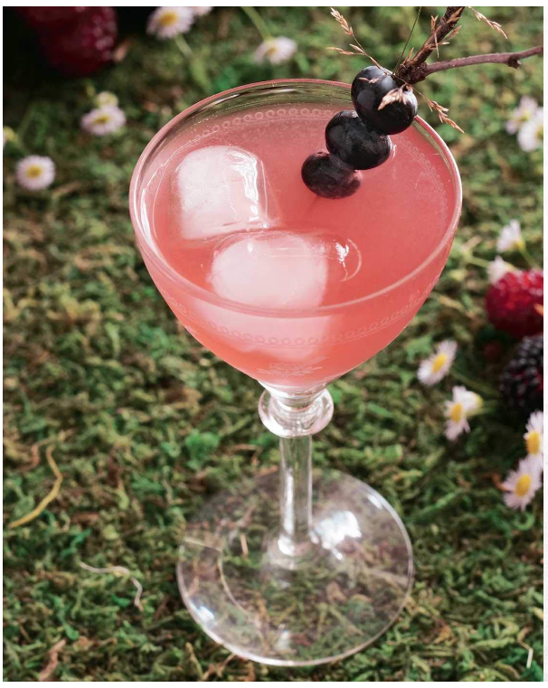

Briartini

Description
This cocktail incorporates some of the strong spirits favored by
Zandalari trolls when they return from a long day of fishing.
Ingredients
- gin
- dry vermouth
- powdered sugar
- ice cubes
Steps
- Combine all the ingredients in a cocktail shaker, and shake vigorously for several seconds.
- Strain into coupe glass, and garnish with fresh berries.